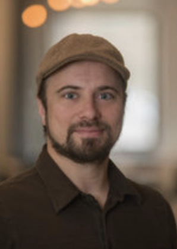
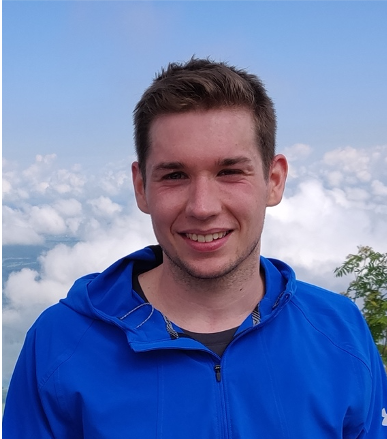
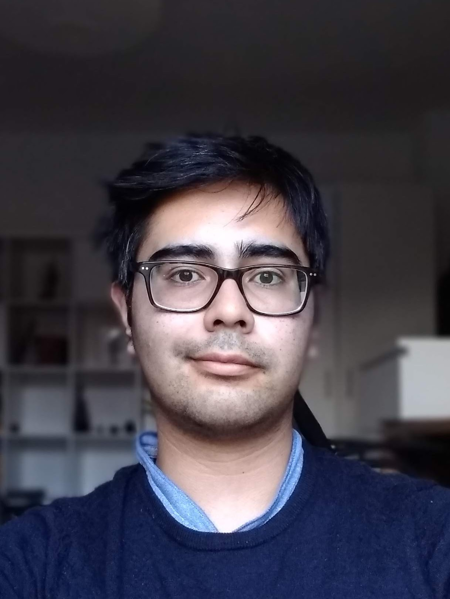
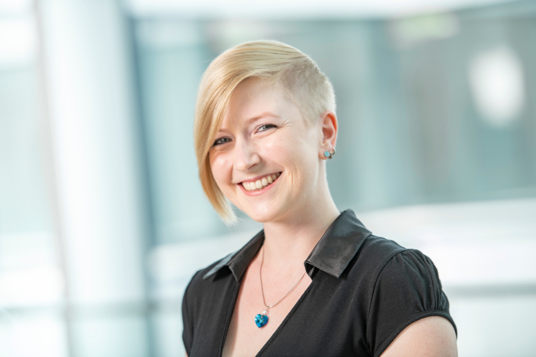
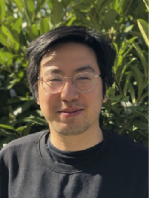
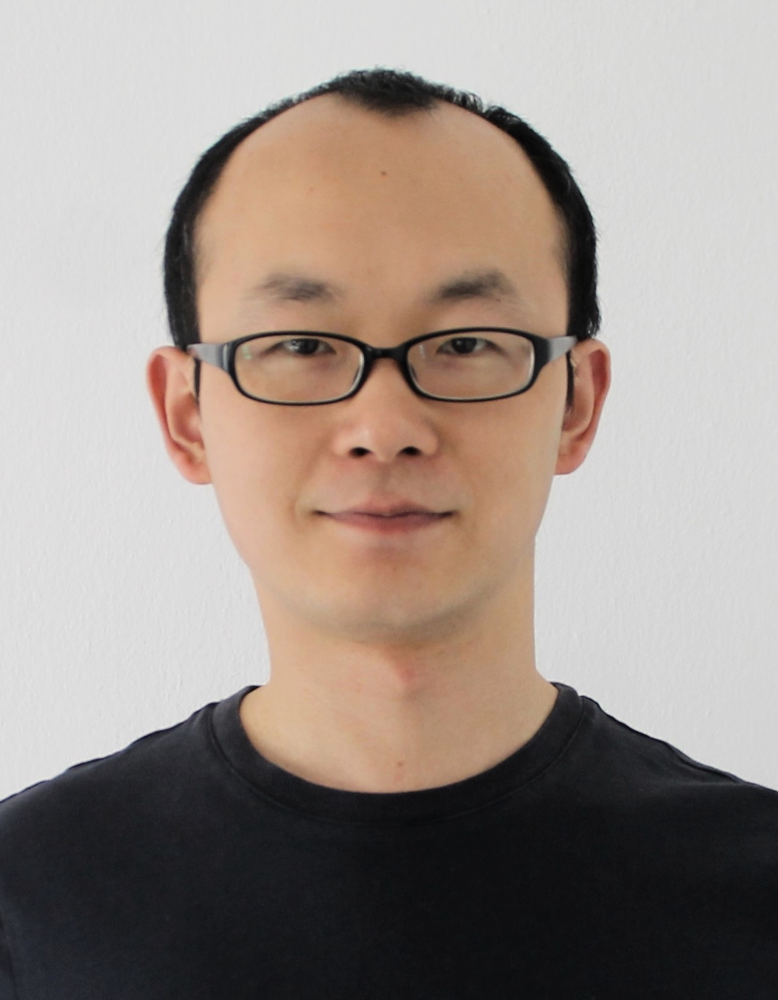
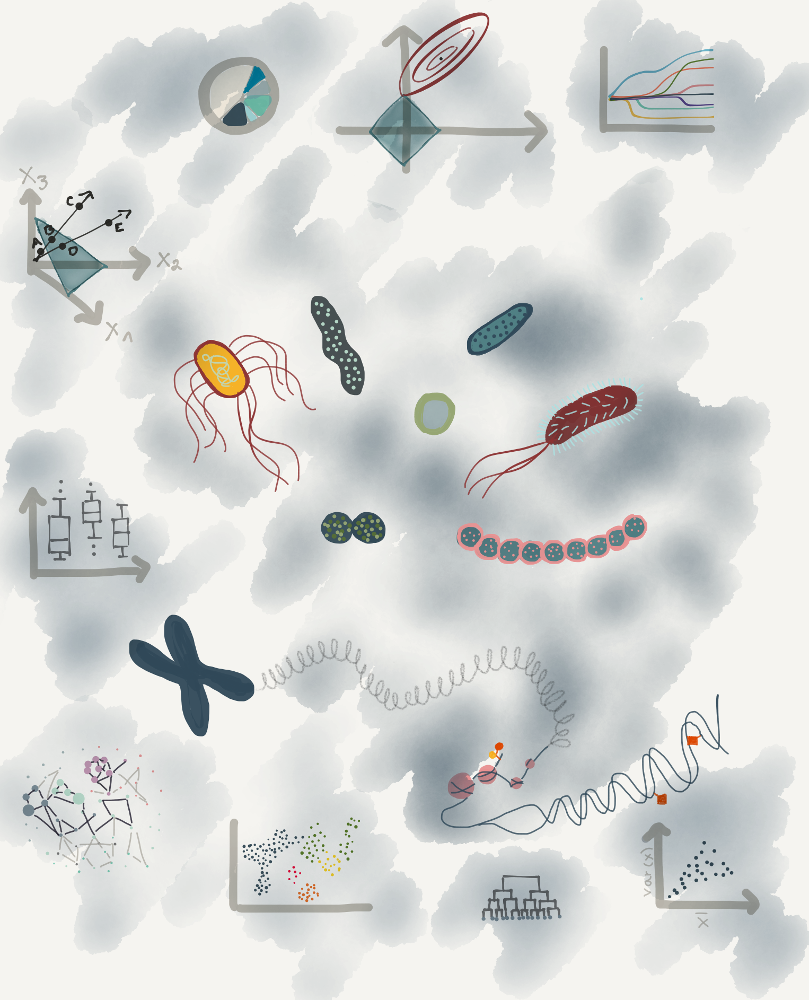

Principal Investigator

Christian L. Müller, Ph.D.
+498931873043
@microbionaut
muellsen
Principal Investigator, Helmholtz Zentrum München, LMU München, Flatiron Institute, New York
christian.mueller@helmholtz-muenchen.de+498931873043
@microbionaut
muellsen
Christian L. Müller has been a group leader at the Institute of Computational Biology (ICB), Helmholtz München since 2019 and Professor for Biomedical Statistics and Data Science
at the Department of Statistics at LMU München.
Since 2014, he has been affiliated with the Simons Foundation, New York,
where he is currently a project leader in computational statistics at
the Center for Computational Mathematics (CCM), Flatiron Institute.
Christian studied computer science, bioinformatics, and poetry at Uppsala University, Sweden, and the Univeristy of Tübingen, Germany and received his Ph.D. in computer science from ETH Zürich, Switzerland. Christian held postdoctoral positions at ETH Zürich and NYU, and deeply cares about method development in high-dimensional statistics, (non-)convex optimization, shallow and deep learning, and their applications to high-throughput biological data sets. The secret life of microbes (the microbiome) holds a special place in Christian's heart (and gut).
Outside the lab, you can find Christian running in the parks and playing soccer.
Christian studied computer science, bioinformatics, and poetry at Uppsala University, Sweden, and the Univeristy of Tübingen, Germany and received his Ph.D. in computer science from ETH Zürich, Switzerland. Christian held postdoctoral positions at ETH Zürich and NYU, and deeply cares about method development in high-dimensional statistics, (non-)convex optimization, shallow and deep learning, and their applications to high-throughput biological data sets. The secret life of microbes (the microbiome) holds a special place in Christian's heart (and gut).
Outside the lab, you can find Christian running in the parks and playing soccer.

Johannes Ostner
@JohannesOstner
johannesostner
Graduate Student, Helmholtz Zentrum München
johannes.ostner@helmholtz-muenchen.de@JohannesOstner
johannesostner
Johannes has a Master’s degree in Mathematics in Data Science from the Technical University of Munich (TUM).
For his thesis, Johannes worked with Benjamin Schubert
and Maren Büttner
to develop scCODA, a statistical model for compositional analysis of single-cell RNA sequencing.
Since then, he has extended his focus to compositional models for high-throughput sequencing data in general, exploring methods that can be applied
to both single-cell and bulk RNA sequencing data. Johannes is experienced in compositional statistics and Machine Learning techniques, and has an
ever-growing expertise in RNA sequencing analysis methods.
Outside of biostatistics, Johannes spends his time with swimming and biking, and volunteers as a swimming coach for kids.
Outside of biostatistics, Johannes spends his time with swimming and biking, and volunteers as a swimming coach for kids.
Mara Stadler
mara.stadler@helmholtz-muenchen.de
@StadlerMara
marastadler
Graduate Student, Helmholtz Zentrum München
Personal Websitemara.stadler@helmholtz-muenchen.de
@StadlerMara
marastadler
Mara has a Master’s Degree in Statistics from the Technical University of Dortmund.
In her master thesis she focused on statistical modeling of dynamic eye-tracking experiments.
Her research interests include dimensionality reduction, feature selection, regularization, and multivariate statistics.
She is currently analyzing large-scale proteomics data in collaboration with Dr. Till Bartke, where she is particularly interested in modeling combinatorial effects on a multiple readout.
Mara enjoys spending her free time skiing or hiking in the mountains or in her second home on Crete, where she grew up for a while.
She is currently analyzing large-scale proteomics data in collaboration with Dr. Till Bartke, where she is particularly interested in modeling combinatorial effects on a multiple readout.
Mara enjoys spending her free time skiing or hiking in the mountains or in her second home on Crete, where she grew up for a while.

Oleg Vlasovets
oleg.vlasovetc@helmholtz-muenchen.de
@ovlasovets
Vlasovets
Graduate Student, Helmholtz Zentrum München
Personal Websiteoleg.vlasovetc@helmholtz-muenchen.de
@ovlasovets
Vlasovets
Oleg received his MSc degree in Data Science from a joint program of
Aalto University and
Eindhoven University of Technology.
His master thesis is focused on detecting anomalies of industrial vessel performance with Bayesian and
unsupervised statistical methods. His research interests are oriented toward optimisation theory, statistical
learning and network inference that can be applied in microbiology. In the BioDataScience Lab, Oleg works on causal
inference of gut microbiome and cardiovascular diseases.
Oleg has work experience in industry and his BSc degree in Business Informatics from HSE University with minor on Data Mining from Yandex.
He also enjoys solving machine learning problems from the business domain, e.g., participating in hackathons and Kaggle competitions. If you don’t find him doing one the activities above, you will probably find him on a tennis court.
Oleg has work experience in industry and his BSc degree in Business Informatics from HSE University with minor on Data Mining from Yandex.
He also enjoys solving machine learning problems from the business domain, e.g., participating in hackathons and Kaggle competitions. If you don’t find him doing one the activities above, you will probably find him on a tennis court.

Roberto Olayo Alarcón
roberto.olayo@lmu.de
@Scietwas
rolayoalarcon
Graduate Student, Institue of Statistics LMU
Personal Websiteroberto.olayo@lmu.de
@Scietwas
rolayoalarcon
Roberto studied Genomic Sciences at the National Autonomous University of Mexico (UNAM).
Before joining our group, he worked with Dr. Robert Schneider
analyzing high-throughput experiments in order to dissect the effect of glucose starvation on cis-regulatory elements in human liver cells.
Broadly speaking, Roberto is very interested in the subject of antibiotic resistance and its intersection with microbial ecology. He makes use of high-throughput datasets to make new insights into the bacterial response to stress, particularly at the transcriptional level. He is very much at home with bioinformatics and the creation of pipelines and is currently expanding his statistical abilities. In our group, he is responsible for the StressRegNet project.
In his free time, Roberto enjoys cycling, bouldering, and playing soccer.
Broadly speaking, Roberto is very interested in the subject of antibiotic resistance and its intersection with microbial ecology. He makes use of high-throughput datasets to make new insights into the bacterial response to stress, particularly at the transcriptional level. He is very much at home with bioinformatics and the creation of pipelines and is currently expanding his statistical abilities. In our group, he is responsible for the StressRegNet project.
In his free time, Roberto enjoys cycling, bouldering, and playing soccer.

Stefanie Peschel
@stefpeschel
stefpeschel
Graduate Student, Department of Statistics at LMU
stefanie.peschel@stat.uni-muenchen.de@stefpeschel
stefpeschel
Stefanie studied Statistics with an Economic and Social Science Background at the Ludwig-Maximilians-Universität (LMU) of Munich.
Her master's thesis was her first foray into the world of microbial network analysis, which formed the basis of her doctoral studies.
She started her Ph.D. at the Institute of Asthma and Allergy Prevention at the Helmholtz Zentrum München
and now continues her work in our group. As part of her doctoral thesis, she developed the R package "NetCoMi",
which provides methods for constructing, analyzing, and comparing networks for microbiome data.
Besides her scientific activities, Stefanie also leads the Early Career Working Group
(AG Nachwuchs) of the IBS-DR.

Daniele Pugno
@DanielePugno
gnopuz83
Graduate Student, Helmholtz Zentrum München
daniele.pugno@helmholtz-muenchen.de@DanielePugno
gnopuz83
Daniele has a Master’s degree in Statistical and Actuarial Science from
"Università Cattolica del Sacro Cuore (UCSC) - Milan".
In his Master’s thesis, he focused on time series models and the implementation of post-processing models for the correction of forecasting errors.
After his Master's Degree, he worked for one year as a data scientist in a biotechnological start-up.
His research interests include statistical learning, multivariate statistics and network inference. Currently, he is working on network inference of gut microbiome with a focus on phage-bacteria interaction.
In his free time, Daniele enjoys climbing, hiking in the mountains and reading.

Viet Tran
viet.tran@campus.lmu.de
viettr
Graduate Student, Institue of Statistics LMU
Personal Websiteviet.tran@campus.lmu.de
viettr
Viet studied Biostatistics and Philosophy at the Ludwig-Maximilians-Universität (LMU) of Munich.
In his Master’s thesis, he focused on extending the trac framework to classification tasks and applying the extension in a causal inference framework.
His current research interests include statistical learning and compositional data analysis with applications to human health and the ocean.
Viet enjoys playing tennis and reading in his free time.

Jinlong Ru
jinlong.ru@helmholtz-muenchen.de
@JinlongRu
rujinlong
Graduate Student, Helmholtz Zentrum München
Personal Websitejinlong.ru@helmholtz-muenchen.de
@JinlongRu
rujinlong
Jinlong has a Master’s degree in Bioinformatics from Northwest A&F University in China. During his Master studies, he developed a database and computational platform for Traditional Chinese Medicine, which has been widely used as a data source for studying herbal medicines from a systems pharmacology perspective.
His research interests include discovering novel drugs from natural products, phage therapy for combating microbial infections, and analyzing metagenomics data. His current work involves studying phage-host interactions using a multi-omics approach, as well as developing tools for viromics data analysis.
In his free time, Jinlong enjoys cooking and reading.
In his free time, Jinlong enjoys cooking and reading.
Tong Wu
tong.wu@helmholtz-muenchen.de
@Tongwu9559
wyc9559
Graduate Student, Helmholtz Zentrum München
Personal Websitetong.wu@helmholtz-muenchen.de
@Tongwu9559
wyc9559
Tong Wu holds a Master’s degree in food science and engineering from Jiangnan University in China. Since his Master's studies, he has been interested in the gut microbiome, especially the potential interactions between the gut microbiome and human health.
Currently, he focuses on the gut-liver-brain axis in Alzheimer’s disease scenarios using a multi-omits approach.
Tong loves playing table tennis and cooking in his spare time.
Tong loves playing table tennis and cooking in his spare time.

Medina Bajramovic
medinabaj
Master Student, Institue of Statistics LMU
bajramovic.medina@campus.lmu.demedinabaj
Medina holds a bachelor in business mathematics from Ludwigs-Maximilian University, where she is also currently pursuing her masters degree in statistics and data science, with a special focus on biostatistics and high-dimensional data analysis.
Together with Roberto, she analyzes bacterial reponses to stress, in particular differential growth curve and luminescent curve analysis.
When Medina is not crunching numbers, she loves to get her hands dirty with plants while sipping on a freshly brewed coffee.
Together with Roberto, she analyzes bacterial reponses to stress, in particular differential growth curve and luminescent curve analysis.
When Medina is not crunching numbers, she loves to get her hands dirty with plants while sipping on a freshly brewed coffee.

Giacomo is doing a consulting project with our group. In his project, he evaluates
different combinatorial effect detection frameworks on real world data.
Aditya Mishra - PostDoc
Alice Sommer - PhD Student
Louis Sanden - Masther thesis
Stefanie Schmid - Master thesis
Salome Carcy - Master thesis
Mahima Arunkumar - Bachelor thesis
Alice Sommer - PhD Student
Louis Sanden - Masther thesis
Stefanie Schmid - Master thesis
Salome Carcy - Master thesis
Mahima Arunkumar - Bachelor thesis